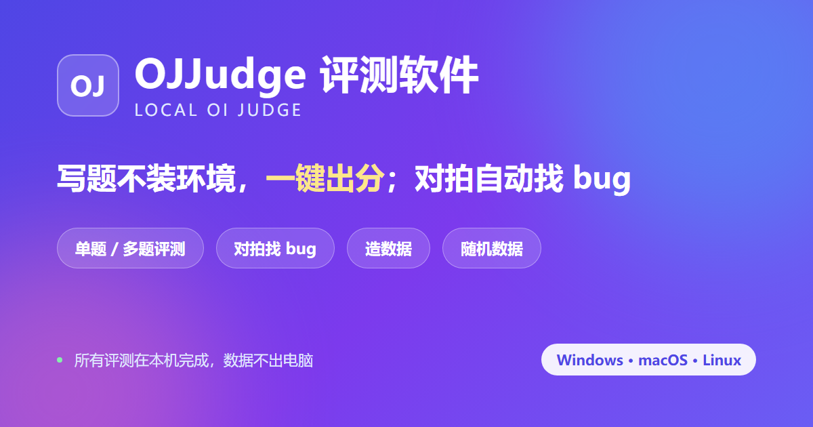

OJJudge 评测软件
官网一款 Windows 本地 OI 评测工具：把「编译 → 跑数据 → 比对输出 → 出分」整个流程自动化。单题 / 多题一键评测出分、对拍自动找 bug、随机数据生成，一个 exe 全包；所有评测在本机完成，数据不出电脑。附带中英双语官网与完整使用说明。
访问官网WORKS
目前上线的作品如下，更多内容在筹备中。

一款 Windows 本地 OI 评测工具：把「编译 → 跑数据 → 比对输出 → 出分」整个流程自动化。单题 / 多题一键评测出分、对拍自动找 bug、随机数据生成，一个 exe 全包；所有评测在本机完成，数据不出电脑。附带中英双语官网与完整使用说明。
访问官网更多作品正在筹备中，敬请期待。